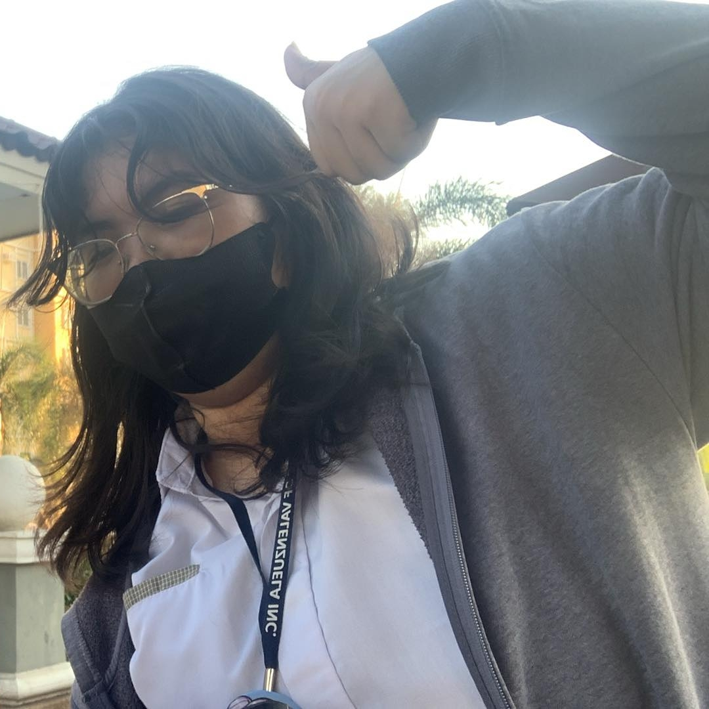

| Home | Digital Art | Traditional Art | Video Edits | About Me |
|
 Maria Venice V. Fernandez |
Hello! *^____^*Welcome to my About Me section! My name is Maria Venice V. Fernandez, 18 years old, and I am an artist and video editor who is currently in their first year of college as a BS Entertainment and Multimedia Computing student. My works range from traditional art to digital art, edits, animation, etc. Here are some of my contact information and socials:
|
「 ✦ My Background ✦ 」Little background on me. I've done art since I was in third grade, and only improved from then on. While I do love doing art, it's really only a hobby of mine. My true passion that i want to pursue as my future career is video editing. I first discovered and found my love for video editing back in fifth grade, 2018. The game "Gacha Studio" was really popular back then, and people made all sorts of videos and animations with it, to which I joined in too and made my first somewhat successful YouTube channel. My main editing app I used here was "Cute Cut Pro". My gacha phase ended around 2019, and I started doing actual video edits during the pandemic, 2020. I watched countless of tutorials learning about various transitions, effects, animations, graphs, until I finally got the hang of it, which is when I made my second Youtube channel where I posted my edits. I shifted editing apps here and used "Alight Motion" which was way more advanced than Cute Cut. While I mostly do video edits as a hobby and for school projects, my editing can range from transition edits for fun, to commercials, trailers, skits, anything! My only limit is that I still only edit on mobile. I can only do so much on mobile, which is why one of my goals is to learn how to use Adobe After Effects in order for me to improve my skills and make much higher grade professional videos! |
⋆˙⟡ My Personality ⋆˙⟡I’d describe myself as creative, willing to learn, and hardworking. As the postives at least, haha. Naturally, I'm lazy and procrastinate a lot. But when I have my mind set on something, even if I procrastinate, I'll still find finish whatever I started (sometimes). I find it hard to express myself through spoken words, but I do love expressing my ideas through art and video editing. At the same time, I enjoy collaborating with people and sharing inspiration! |
⋆˚࿔ Hobbies & Favorites ⋆˚࿔Outside of school, I love spending my time on:
Some favorites of mine!:
|
✰ My Goals ✰My short term goal for now is to save enough money to buy a new laptop as my current one is in bad shape. /(ㄒoㄒ)/~~ To achieve that goal, I've been spending less of my school allowance, and even took a side gig of doing video editing commissions! I've made ₱500 so far from one edit! :D My long term goal on the other hand is to become a professional multimedia creator, whether that’s as a video editor, or animator, while also using my hobby of drawing as a skill I can utilize. I want to keep improving my skills and maybe even work for big companies, or start my own creative studio someday! |
Contact InformationEmail: fmariavenice@email.comPhone: 0961-189-6929 Location: Valenzuela City, Philippines Educational AttainmentManila Central UniversityBS in Entertainment and Multimedia Computing Expected Graduation: 2029 Saint Mary's Angels College of Valenzuela Inc. Junior and Senior Highschool 2021-2025 Colegio De Sta. Cecilia Elementary and Junior Highschool 2013-2021 Skills
ExperienceYoutuber2018-2023 • Posted video edits on YouTube Freelance Video Editor 2025 • Edited promotional content using Alight Motion Multimedia Editor of The Pharos 2025 Hobbies & Interests• Video Editing• Digital/Traditional Art |